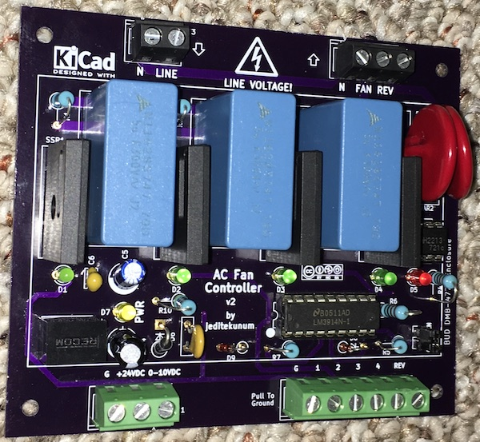

Automating Ceiling Fans V2
September 2017
WARNING:
The following information may not be useful for those with limited experience with electronics and electricity. This is a DIY oriented article but requires basic soldering skills and familiarity with electronics. Most importantly, if you are not experienced with working with 120V AC mains power you should not proceed due to the potentially lethal voltages involved! If you choose to proceed with using any of the information presented here, the author accepts no responsibility for your use - or misuse. Proceed with caution.
Previous Version
Please refer to the article Automating Ceiling Fans (V1) for an overview of the previous generation of this circuit and an explanation of ceiling fan anatomy. This article assumes you already have that knowledge.
Version 2
This version is essentially the same circuit although both the adapter and controller have been combined onto a single board. The adapter portion does not need to be populated if it isn't going to be used. It can also be disabled by removing a jumper. The new version is designed to fit in a DIN case that reduces potential shock hazard and has a more professional appearance.
Requirements
The following requirements have led to the design presented here. They are the same as the previous version.
- Ability to control the speed of AC ceiling fans
- Adaptable to different fans as much as possible using a variety of components
- As many as 3 speeds in addition to full on
- Isolate AC voltage from control circuit
- Flexible control interface - simple relay or open collector at minimum
- Optional control via 0-10VDC
Custom Ceiling Fan Control - V2
Be careful with high voltages!
I have designed a circuit and board that allows an automation system to switch in one or more capacitors to control fan speed. You may build one yourself.
The result looks something like this:

Connections
The AC line in (and neutral) is connected at the top left. The Fan and Reverse (and neutral) are connected at the top right. You may ignore the neutrals and join them elsewhere.
The reversing functionality is limited by the design of most fans. The direction switch in most fans is below the motor and it is generally not possible to install additional wires (or at least very difficult requiring the motor be torn apart). If you wish to control the direction you will likely have to select a fan that includes a light - only to get the additional wire needed to control a 120VAC relay that replaces the switch. The wire run to the fan will need to be 14/3 to provide access to the relay from the controller. The light will no longer be functional.
AC grounds must be joined elsewhere.
The automation system connects at the bottom. On the left is the DC ground, +24VDC supply, and optional 0-10VDC speed control. On the right is DC ground, 4 "speed" selectors, and reverse. You should use only one of the control methods, 0-10VDC or the speed selectors.
Powering
The board requires 18-24VDC. Expect less than 100ma @ 24VDC typically.
Direction Control Method
If the reversing relay has been installed and connected to the appropriate terminal then pulling pin 6 of the bottom right terminal block to ground will activate the reversing relay. The SSR is optically isolated.
Selector Speed Control Method
There are 4 (optically isolated) SSRs that can be independently activated via pulling pins 2-5 of the bottom right terminal block to ground. The first 3 are connected through capacitors. The 4th provides full power to the fan.
Using this method it is up to the individual implementation to choose how much capacitance to use and whether they are aggregated or not. For example, values of 5uF, 10uF, and 15uF could be installed and then only one pin needs to be used to activate the desired speed. Or, values of 5uF, 5uF, and 5uF would obviously all produce the same results if activated individually. Combing any 2 would provide 10uF and any 3 would provide 15uF. This provides a lot of flexibility if your application requires more than 3 speeds.
0-10VDC Speed Control Method
If you choose to use the optional 0-10VDC control method, the activation of SSRs and capacitors will be cumulative. That is, low will activate #1, medium will activate #1 & #2, high will activate #1 & #2 & #3, and full will activate all 4. Capacitance will be additive.
The chip (LM3924) that does the conversion from 0-10VDC has 10 steps. The top 2 steps, 9 & 10, are not connected. Long cable runs can reduce voltages so it may not be possible to achieve 9V+; plus there is a diode in front. Of the remaining steps, the 8 levels need to be reduced to 4. SSR/capactor #1 can be connected to either step 1 or 2; #2 to step 3 or 4; #3 to step 5 or 6; and #4 to step 7 or 8.
IMPORTANT: You must solder your desired bridging for JP2-JP5 or 0-10V control will not work!
If you bridge #1 to 1, #2 to 3, #3 to 5, and #4 to 7 the control voltages that activate the next level will be roughly 2V, 4V, 6V, and 8V. If you bridge #1 to 2, #2 to 4, #3 to 6, and #4 to 8 the control voltages that activate the next level will be roughly 3V, 5V, 7V, and 9V. This allows a little shifting around if necessary to match your driving circuit. I've configured mine for 3V/5V/7V/9V.
Parts
Substitutions can be made for many parts for unique situations. In my implementations I've used the following:
- TDK B32794D3505K capacitors
- G3MC-202P-CD SSRs
- AQH3213 SSR
- TMOV20RP200E MOVs
- R-78E15-0.5 DC-to-DC converter
- MF-R050 resetable fuse
- LM3914 bar graph
- 10V zener
- assorted diodes, capacitors, resistors, and LEDs
- BUD DMB-4773 DIN box
- BUD DMB-4773-CC clear window for DIN box
- PCB from OSHPark (as of 2017 ~$70 for 3 boards)
Build Notes
The only difficulty I had in building was a result of my error in designing the footprint for the MOVs. If you use the MOVs specified above, the leads will be difficult to get through the board - the holes aren't large enough. I was able to get mine in with some finesse. I apologize for the trouble but it wasn't worth tweaking the board design - and testing a board.
Testing
I've built 2 of these and tested with a Hunter ceiling fan and a window fan. I tested with 100' of romex between the controller and the fan.
Although everything has worked perfectly, as with any DIY project, your mileage may vary.